Ubiquiti представили airOS 8.3: да здравствует GPS-синхронизация
17 июнь 2017 3 399 0
Не так давно, в ноябре 2016-го в моем распоряжении находилась пара точек доступа Rocket 5ac PRISM. Ubiquiti прямо на упаковке обещали поддержку GPS-синхронизации, но как оказалось, на тот момент функция была в процессе полной переработки.
И вот, спустя более чем пол года, 16-го июня, компания анонсировала выход airOS 8.3, а вместе с ней и долгожданную поддержку GPS Sync. Не слишком-то компания и спешила, ведь Rocket 5ac PRISM был представлен еще годом ранее до того, как эти устройства попали ко мне в руки.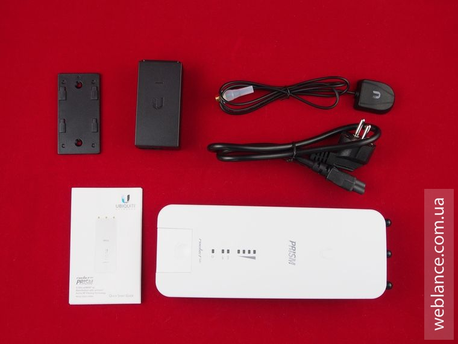
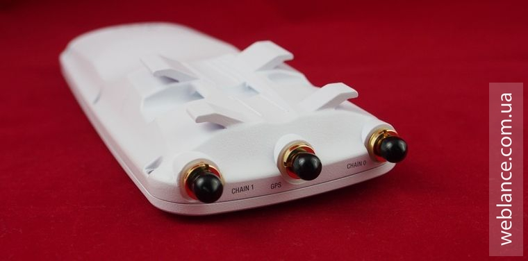
Впрочем, тогда же я писал по этому поводу напрямую разработчикам. Как сообщили в Ubiquiti, на тот момент они работали над обратной совместимостью стандартов airMAX и airMAX ac. Причем на данное направление были брошены все силы. И действительно, в airOS 8.2 вы уже сейчас можете наблюдать режим «Access Point PtMP airMAX ac Mixed», позволяющий точке доступа и базовой станции в целом, одновременно обслуживать как устройства семейства M5 (airMAX), так и новые 5ac (airMAX ac).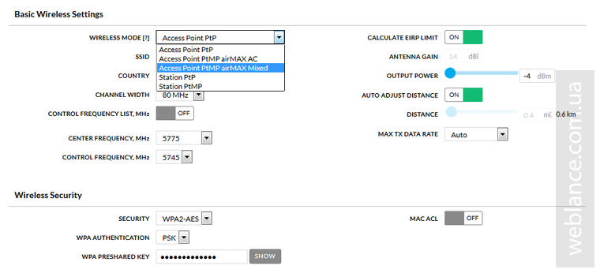
Всё это позволяет совершить плавный перевод сети WISP на новую платформу, без необходимости в полной замене парка устройств CPE.
Вчера компания представила свежие прошивки на базе airOS v8.3.0 для платформы WA и XC, а это следующие устройства:
При выборе файла прошивки, важно не ошибиться.
Как видите, новое ПО вышло не только для высокоуровневых устройств, но и для более бюджетных моделей как LiteBeam 5AC (она же LBE-5AC-23). Также в новой прошивке добавлена поддержка UNMS (Ubiquiti Networks Management System).
Как работает GPS Sync?
Технология GPS Sync разработана для использования при co-location, т.е. когда рядом расположено несколько точек доступа (AP). Наиболее частый пример – базовая станция провайдера с несколькими секторами.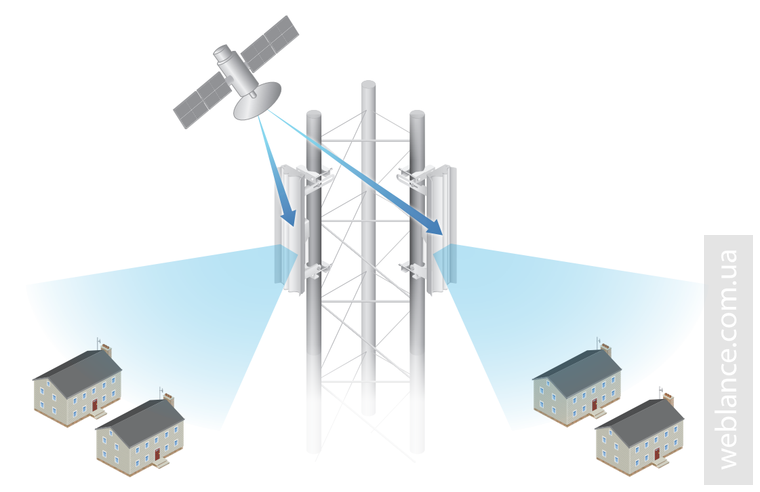
При активации GSP Sync, все сектора (точки доступа) осуществляют прием и передачу данных в один и тот же интервал времени. Таким образом, в момент передачи данных (TX) от точки к клиенту, ни один из секторов не работает на прием (RX), благодаря чему достигается защита от взаимной интерференции между точками в процессе работы. Точно также в режиме приема, ни одна из точек не вещает, что позволяет получить максимально чистый сигнал и улучшить CINR.
Если точка доступа поддерживает саму технологию GPS Sync (используется отдельная антенна) и работает под управлением airOS 8.3 (или выше) – GPS-синхронизация будет должным образом работать, причем GPS Sync не требует связи между устройствами.
Преимущества и особенности GPS Sync
Рекомендации
Требования
Для работы GSP-синхронизации вам необходимо использовать точки доступа airMAX AC с модулем GPS. На текущий момент, этим критериям соответствуют следующие модели:
Для синхронизации требуется, чтобы все точки доступа имели должный уровень сигнала от GPS-спутников. Помимо этого, необходимо обеспечить одинаковое соотношение «downlink/uplink ratio» на всех точках, как и размер кадра «frame duration».
При выборе рабочих диапазонов, не забывайте резервировать, по меньшей мере, 10 МГц полосы между используемыми каналами.
Примеры правильного планирования сети
Базовая станция из четырех устройств без GPS Sync требует использования 4 разных диапазонов частот. В случае с применением GPS-синхронизации, количество используемых диапазон сводится к двум. При этом, одинаковая частота устанавливается на противоположных точках, которые установлены спиной к спине (back?to?back). Это же правило применимо для конфигурации из двух точек.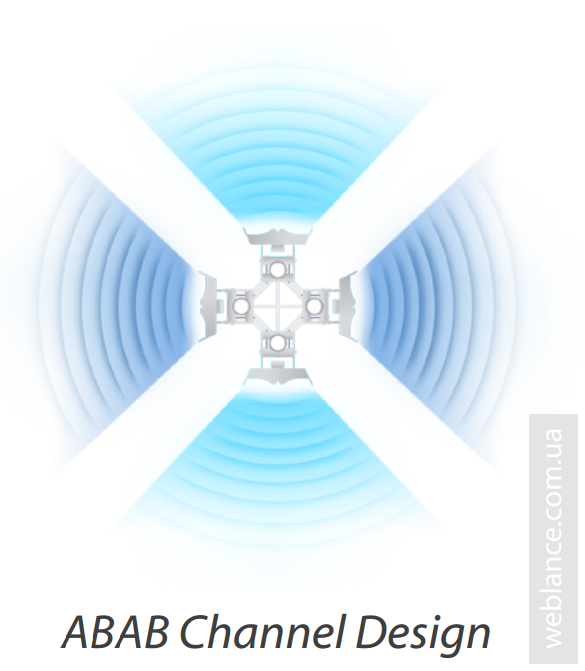
Для более плотных конфигурации из 6 устройств, когда используются антенны с более узкими лучами, например PrismStation, при использовании GPS Sync необходимо использовать 3 канала. Frequency reuse также используется, но только для противоположных устройств.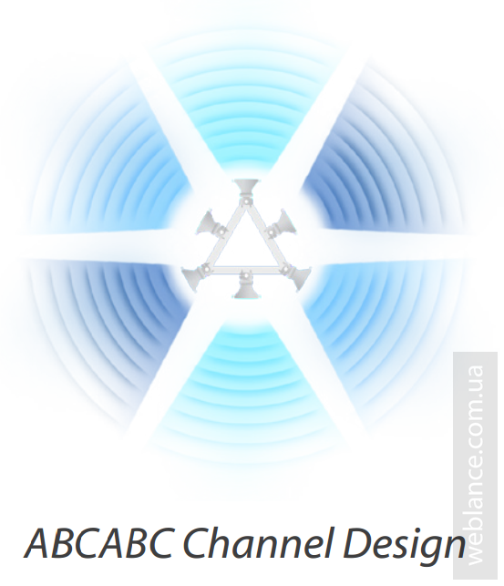
Если ваша сеть использует несколько вышек, выбор частот следует осуществлять со смещением.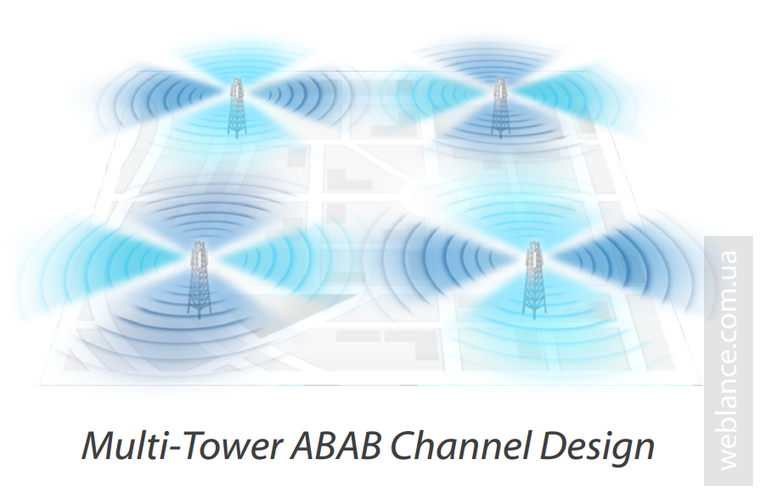
Чего делать не стоит?
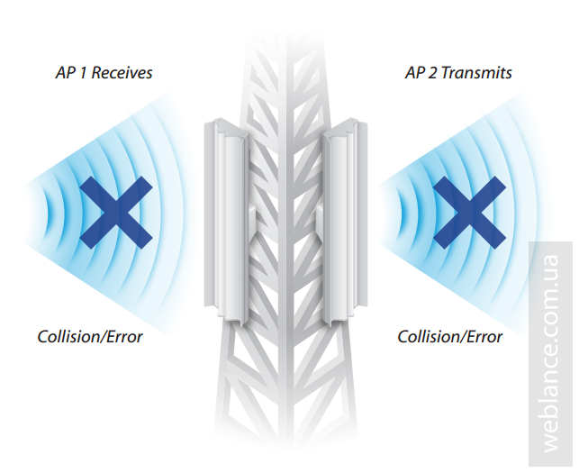
На одинаковых или смежных частотах не стоит одновременно использовать точки с синхронизацией и без, т.к. в процессе работы будут возникать ошибки коллизии. Всё дело в том, что при работе GPS Sync устанавливается четкая временная последовательность приема и передачи, точки, не придерживающиеся этой последовательности, будут вызывать интерференцию.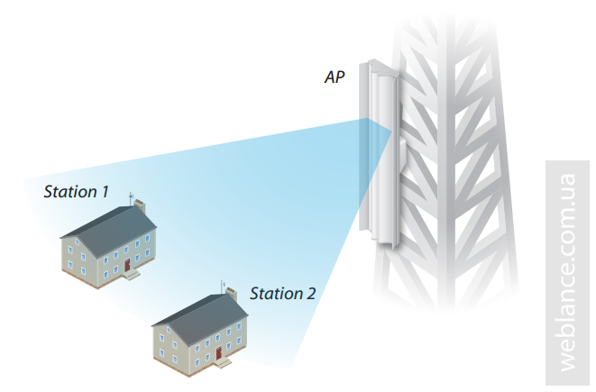
Когда GPS Sync использовать не надо? Во-первых, в сценариях, когда у вас большой свободный диапазон и нет интерференции, например, когда вы используете всего одну точку, или же частоты сильно разнесены.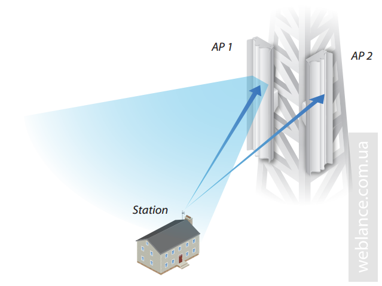
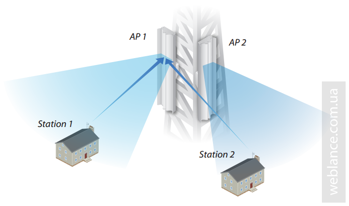
Во-вторых, сценарии, когда клиент CPE может слышать оба сектора с одинаковым уровнем сигнала или же AP видит 2 CPE со своего и чужого сектора с одинаковым уровнем. Тем самым, при использовании GPS Sync, в данной ситуации вы создадите интерференцию/шум.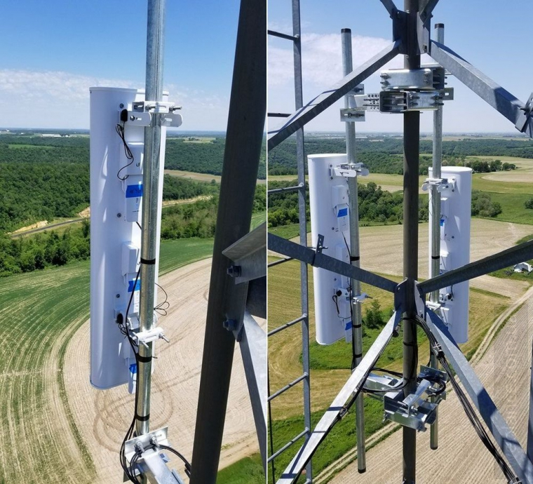 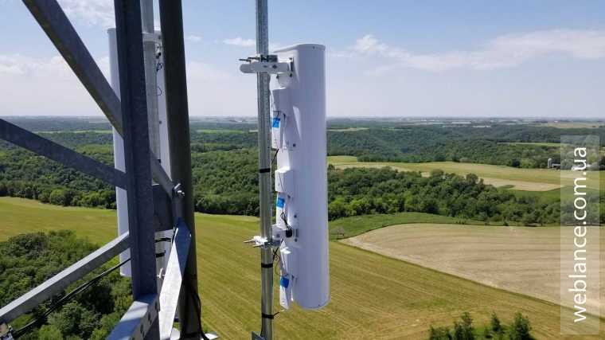 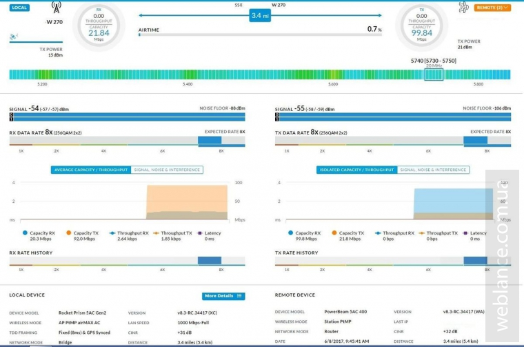